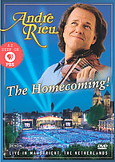

|
The Homecoming (2006) - 167 Minutes
|
 |
| This new multimedia
spectacular was filmed live in Maastricht, The
Netherlands. Filmed in
the Netherlands, Andre Rieu's THE HOMECOMING
features over 30 classical tracks including
"Lullaby," "Carmen Overture," "Auld Lang Syne,"
and "Swinging Bells." |
Where to buy?
-
The Warehouse - NONE
-
Mighty Ape -
NONE
-
The CD & DVD Store (Marbecks) - $29.99
(No link)
|
|
DVD Tracklist
Part One
- Carmen Overture
- Aviator's March
- You're Worth Your Weight in Gold
- Song of Vilja
- Today is the Most Beuatiful Day (Heut' ist der
schönste Tag)
- Oh, I have in My Heart (Ach Ich Hab in Meinem
Herzen)
- Concierto d'Aranjuez
- Swinging bells of Limburg
- Funiculi Funicula
- The White Horse Inn
- Second Waltz
- Chianti Song
- Maastricht Anthem
Part Two
- Radetsky March
- Whether Blond or Brunette, We Love Them All (Ob
Blond, Ob Braun)
- I Could Have Danced All Night from My Fair Lady
- With a Little Bit of Luck from My Fair Lady
- Juliska from Budapest
- Memories from Cats
- A Bright Young Man - Medley
- Toselli Serenade (Nightingale Serenade)
- Libiamo
- La Donna è Mobile - Medley
- Auld Lang Syne
- Ode to Maastricht
- Lullaby
- Entry March
- Maastricht, City of Jolly Singers
|
|